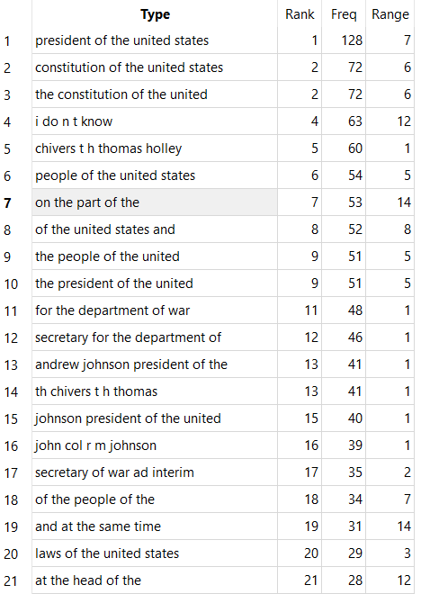

For this assignment, we were tasked with using software tools tools to analyze multiple texts at once to find similarities between them. The tool I mainly used was AntConc, capable of finding multiple word strings called N-grams and finding how frequent they are what texts they appear in, and what follows and suceeds them.
The files I chose to compare was a single file containing the already collected texts of Edgar Allan Poe to compare against 119 other texts from the 19th-century. Poe was a famous poet from Boston MA. Born in 1809 and died at the age of 40 in 1849, he was best known for short yet unerving stories such as The Raven and The Tell-Tale Heart. I thought that is was fair to use some text processing tools to compare Poe's archive from the same century. The other texts in question range from news reports, magazines, etc. It's a mess, which is why we sort these things in the first place.
A cleaned copy of the Edgar Allan Poe collection can be found here. A folder of COHA-historic-to-pres text files can be found here. The folder of all collected text files can be found here on my repo.
To nobody's suprise, the word the won the most used word contest with 122744 individual uses across all 120 files. It almost beat of 2 to 1. Makes perfect sense to me considering it's one of the most commonly used words in the English language.
The phrase one of the is usually followed up with most. The context before and after is completely different, but it is a pattern in writing style between two completely different archives. Unlike the situation with don't where the 19th century texts are the only ones to even use the word. It's only followed up by the word you or know. One time it was even completely capitalized. It shows that a single common word can be completely left out of a written litterature collection compared to 119 other texts. Why did Poe not use this word? Is there a written work of his that did use it? (Like a letter to someone?)
A ranking of N-gram 5 phrases by number of times used. A lot of phrases from the 19th century texts overpower Poe's writing.

A list of N-gram 5 phrases sorted by total number of appearances. on the part of the is being provided additional context. 1818755 unique types were processed.
The phrase on the part of the is only the 7th most used 5 word phrased used across both collections, but unlike don't, it actually used in both collections. It's usually used to adress a person or place. Makes perfect sense considering how it's meant to be used in this context. However, some phrases like president of the united states (and similar phrases) was never used once in Edgar Allan Poe's work.
A manual search of the word heart with additional context. There are 1041 instances of the word within the files.
Just from looking at these instances, "The Tell-Tale Heart" and "The Raven" was included in the Edgar Allan Poe collection. Seeing as those two are classics, it would be foolish not to. The uses of the word in the rest of the texts each provide a window of the original contexts of radically different sources. Some of them do sound like part of a darker/mysterious poem. I wonder why that is? Perhaps I should start actually reading these. When I have time of course.